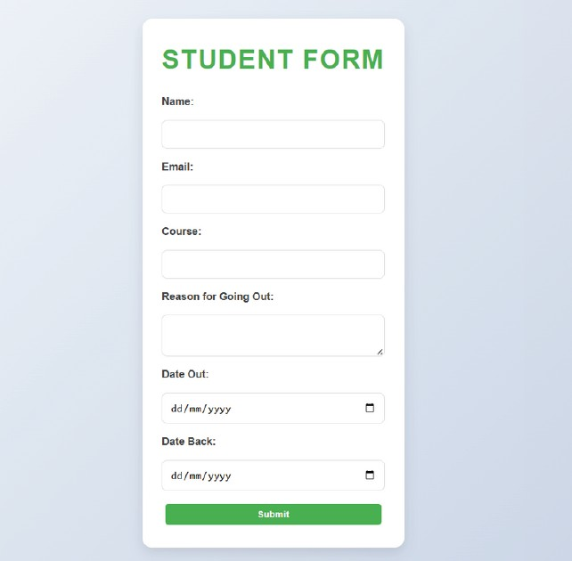
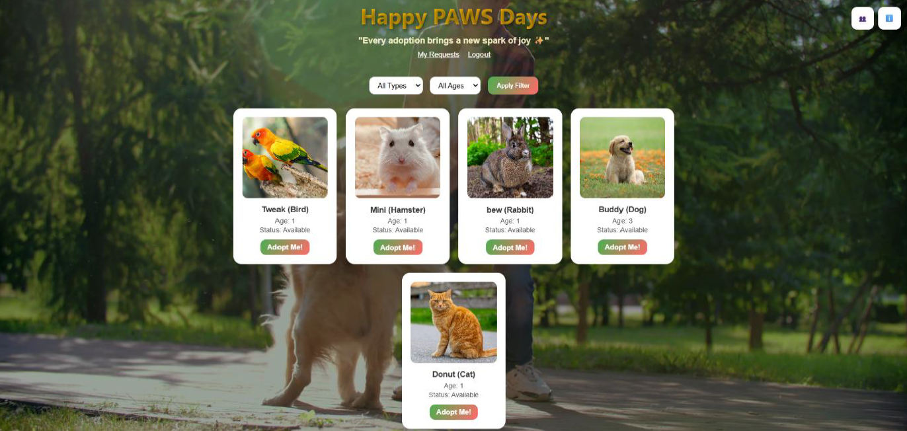
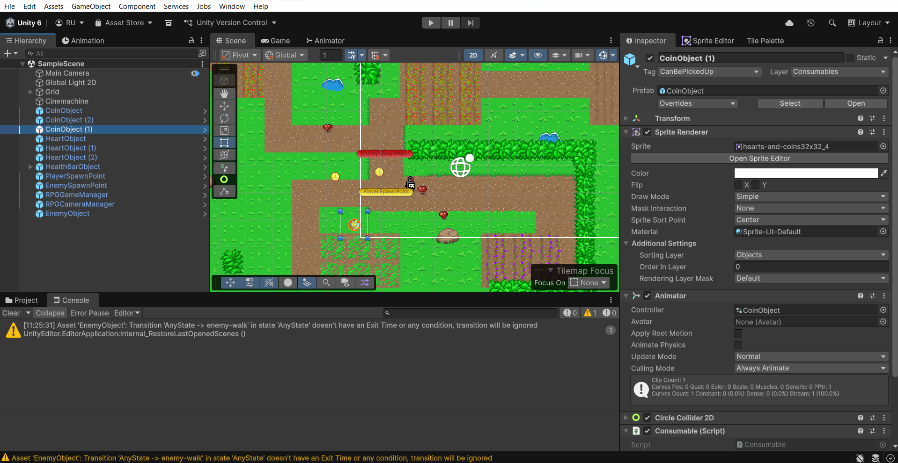
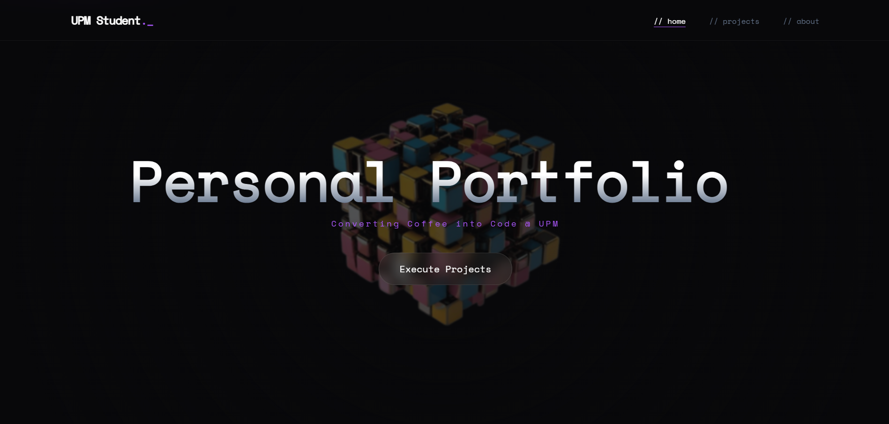
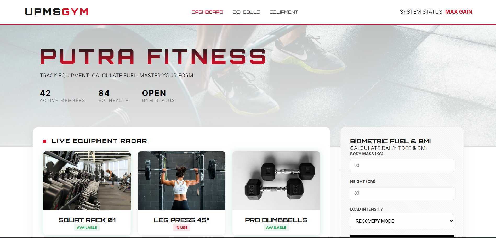

Academic Projects Work
A collection of things I've built while learning.

Tech: CSS/JAVA/SQL
Semester: 2
This was one of my first real challenges. I built a system to track the flow of UPM students, recording every time someone enters or leaves the campus. It was a huge learning experience for me, figuring out how to handle real data and making sure the logic actually worked for everyone using it.

Tech:JAVA/HTML/CSS/XAMP
Semester: 4
I built this prototype to bridge the gap between customers and animal shelters. It’s a database-driven system where users can browse and adopt pets freely, while admins have a full dashboard to oversee and manage the data. This project really helped me understand how to connect a front-end interface with a working back-end.

Tech: Unity/C#
Semester: 5
This project was a big one for me since I’ve loved games since I was a kid. I used Unity and C# to develop a 2D platformer from scratch. It was a challenge to get the physics and character movement right, but it was amazing to finally build a game of my own instead of just playing them.

Tech: HTML/CSS/JS
Semester: 5
This is the site you're looking at right now. I built this to showcase my journey from having zero tech experience to where I am today. It’s my own space to practice clean design and front-end architecture, serving as a living record of everything I’ve learned at UPM so far.

Tech: HTML/CSS/JS/Database
Semester: 5
I’m currently working on a real-world web project for a client. It’s a work in progress where I’m using HTML, CSS, and JavaScript, backed by a simple database to handle information. This project is a big milestone for me because it’s my first time taking what I’ve learned at UPM and applying it to a professional client's needs.